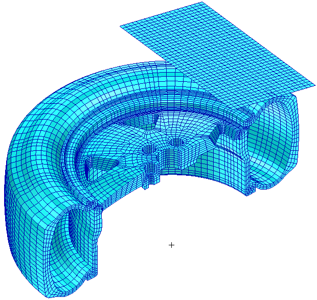
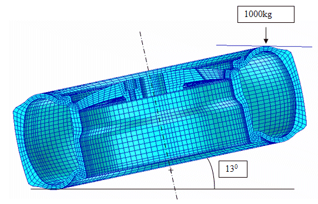
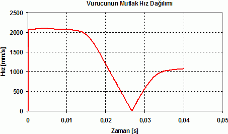
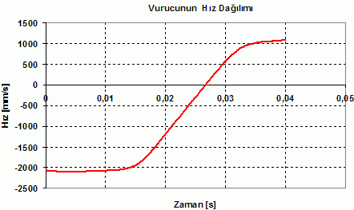
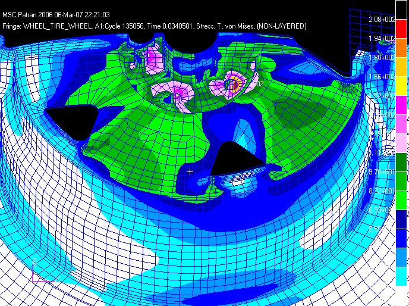
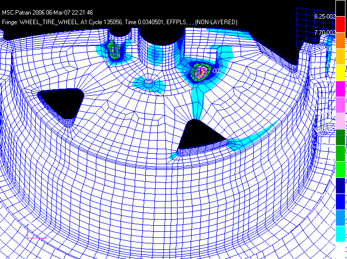
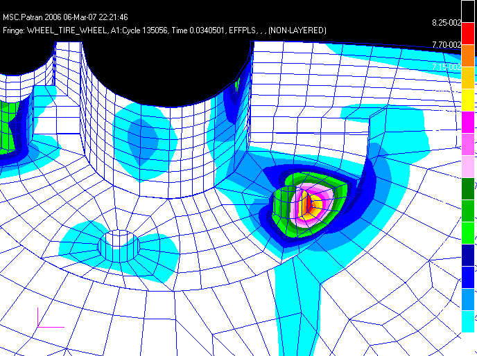
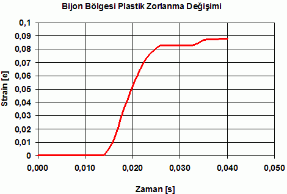

|
5. Sonlu Elemanlar Modeli
Jant darbe testi modellenirken test koþullarýndaki sabitleme bölgeleri ve montaj ölçüleri dikkate alýnmýþtýr. Buna göre jant yatayla 13° açý yapmaktadýr. 1.000kg'lýk kütle ise 230mm yükseklikten jant üzerine düþürülmektedir. Jant üzerinde lastik te bulunmaktadýr. Kütleden baþka jant üzerinde zorlanmýþ bir kuvvet etkisi yoktur. Bu koþullara göre öncelikle jant ve üzerindeki kütle modellenmiþtir. Jant ve lastik elemanlar CHEXA elemaný olarak seçilmiþtir. Modelleme MSC. PATRAN ortamýnda gerçekleþtirilmiþtir. Modelleme yapýlýrken öncelikle jantýn kesit alaný sonlu elemanlar aðý ile örülmüþ daha sonra bu kesit jant merkezi etrafýnda süpürülerek katý elemanlar oluþturulmuþtur. Darbe etkisi oluþturan kütle ise belirtilen en boy ölçüsüne sadýk kalýnarak yüzey olarak tanýmlanmýþ ve rijit kabul edilmiþtir.

Þekil 5. Eleman Gösterimi

6. Analiz Sonuçlarý
Bu hýz 230mm'den serbest düþmeye maruz kalan parçanýn kazanacaðý hýza eþittir ve ile elde edilmiþ hýzdýr. Bu hýzýn deðeri ise daha önceki bölümde hesaplandýðý gibi 2124,3mm/s'dir. Elde edilen sonuçlarda ise baþlangýç hareket baþlangýcýnda elde edilen sonuçlarda ise hýzýn 2096mm/s den baþladýðýný göstermektedir. Bu da verilen koþula göre 2097/2124,3 = %98,7'lik bu doðrulukta hareketin yapýldýðýný göstermektedir.

Þekil 6. Test Boyunca Vurucudaki Mutlak Hýz Deðiþimi
Grafik detaylý bir þekilde incelendiðinde vurucunun hýzýnýn 0,0267s sonra sýfýra çok yakýn olduðu görülmektedir. Bu zamanda vurucunun hýzý 2,05mm/s'ye (yüksek baþlangýç hýzý düþünüldüðünde bu hýz sýfýr olarak kabul edilebilir) kadar düþmüþtür. Bu zamandan sonra vurucu yön deðiþtirmiþ ve ters yöndeki ivmelenme hareketine devam etmiþtir. Vurucunun ulaþtýðý hýz ise 40ms sonra 1073mm/s dir. Aþaðýdaki grafikte vurucunun hýzýnýn yön deðiþimi görülmektedir. Burada ters yöndeki baþlangýç hýzý ile baþlamýþ daha sonra 0,013s sonra hýzý giderek azalmýþtýr. Dolayýsý ile 0,013s ile hýzýnýn sýfýr olduðu 0,0267s arasýnda var olan kinetik enerjisini jant'a aktarmýþtýr.

Þekil 7. Test Boyunca Vurucudaki Hýz Deðiþimi
34ms sonra sistem üzerinde maksimum gerilmeye ulaþýlmýþtýr. Von - Mises gerilme deðiþimi aþaðýdaki þekilde gözükmektedir. Maksimum gerilme 207 MPa'dýr. Bu deðer akma sýnýrýnýn üzerindedir.

Þekil 8. 34 ms Sonra Gerilme Deðiþimi
Gerilme bölgeleri incelendiðinde özellikle bijon bölgesinde yýðýlmalarýn oluþtuðu gözlemlenmiþtir. Analiz boyunca kritik bölge olan bijon bölgesinde plastik deðiþim olduðu gözlemlenmiþtir. Mühendislik hesaplamalarý bakýmýndan gerilme yoðunluðunun bulunduðu bölgeler kritik bölgeler olarak deðerlendirilmektedir. Dinamik darbe sonrasýnda özellikle jant ayaklarýnýn bijon bölgesi ile baðlandýðý bölgeler ve bijon diplerinde maksimum gerilmelerin olduðu görülmüþtür. Dinamik darbe testi boyunca jant üzerindeki kalýcý deformasyon bölgeleri incelenmiþtir. Darbe boyunca oluþan maksimum plastik deðiþim aþaðýda gözükmektedir. Aþaðýdaki þekilde görüldüðü gibi maksimum plastik deðiþimi bijon bölgesinde oluþmuþtur. Ayrýca kritik bölge olan jant ayaklarý ve jantýn uç noktasýnda da plastik deðiþim görülmüþtür. Bu sonuçta bu jant tasarýmý için testi geçememiþ sayýlabilir. Bu jant tasarýmý için bijon bölgelerindeki gömme baþý civata bölgelerinde gömme derinliðinin azaltýlmasý ve ayaklardaki et kalýnlýðýnýn özellikle köþe bölgelerinde deðiþtirilmesi eðer mümkünse arttýrýlmasý gerekebilir.


Þekil 9. Plastik Deðiþim
Kritik bölge olan bijon bölgesinin darbe boyunca plastik deðiþimi aþaðýda gösterilmiþtir. Bijon bölgesindeki plastik deðiþim incelendiðinde plastik deðiþim kendini 15ms (0,015s) sonra göstermektedir. 26ms lik zaman dilimine kadar plastik deðiþim zamanla doðrusala yakýn bir artým göstermiþtir. 26ms ile 30ms aralýðýnda ise ayný deðerini korumuþ ve daha sonra bir miktar daha artmýþtýr. 26ms sonra vurucudaki hýz yönünün deðiþmesinin bilinmesi neticesinde plastik zorlanma deðerinin temas kesildiði andan sonraki çok küçük zaman aralýðýnda dahi bir miktar arttýðý gözlemlenmiþtir. Bu zaman aralýðýnda da jant ucundaki kinetik enerjinin zamanla sisteme aktarýlmasýn da kullanýlmýþ olabilir.

Þekil 10. Jant Üzerindeki Çökme Deðiþimi
Darbe sonucunda maksimum çökme 26 ms sonra oluþmuþtur. Maksimum çökme deðeri ise 16,7mm'dir. Jant üzerinde maksimum çökme deðiþimi ise aþaðýda þekilde gözükmektedir. Çökme deðiþimi incelendiðinde zamanda jantýn alt ucunda darbe etkisiyle hareket yönünde bir sehim olduðu görülmüþtür. Bu sehim zamanla artmýþ ve tam temasýn kesildiði anda ise maksimum deðere ulaþmýþtýr. Bu denli çökmenin fazla olmasýnýn nedeni ise jant kolunun uzunluðundan kaynaklanmasý olarak yorumlanabilir.
|